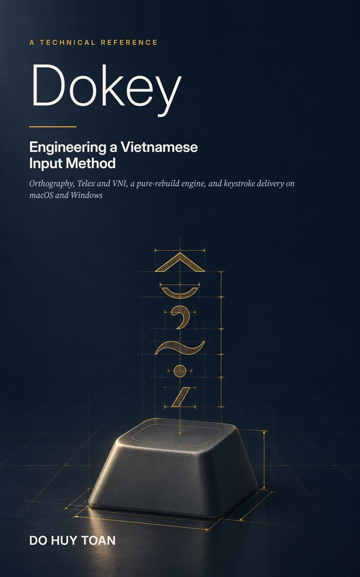

Book · First edition · 6 November 2026
Dokey: Engineering a Vietnamese Input Method

Orthography, Telex and VNI, a pure-rebuild engine, and keystroke delivery on macOS and Windows. A technical reference of 222 pages on how one Vietnamese input method turns keystrokes into correct text, and how it gets that text into every kind of application.
About the book
Typing Vietnamese on a computer still goes wrong in ordinary use: letters are jumbled or lost in browsers and Electron applications, English words pick up tone marks, and the screen drifts away from what the input method believes it typed. This book explains, in full technical detail, how Dokey was designed to avoid those failures.
Dokey keeps only the raw keys of the current word and rebuilds the whole word from them on every keystroke with a pure function. A mark is applied only if the result can still be a Vietnamese syllable, so English words stay as typed. Every correction leaves the engine as one minimal edit, and the platform layer delivers it in the way each kind of application needs. Every number in the book was taken from the software's repository or measured for the book, with the method stated.
Contents
- Typing Vietnamese on a Standard Keyboard
- Vietnamese Orthography for Engineers
- Telex and VNI as Formal Rules
- The Pure-Rebuild Engine
- Syllable Validation as a Gate
- Tone Placement and Output Encoding
- Editing: Backspace, Reopening, Undo and Shortcuts
- Minimal Edits and Per-Application Delivery
- The macOS Platform Layer
- The Windows Platform Layer
- The C API
- Testing Strategy
- Evaluation and What Is Not Tested
- Performance
- Building and Packaging
- Lessons and Future Work
Appendices: rule tables · Unicode code points for Vietnamese letters · initials and rhymes · the complete inventory of 3,957 syllables · regression data · measurement programs · the Korean prototype. Glossary, references and index.
Details
- Format
- 222 pages, 6 × 9 in; PDF and EPUB 3
- Software
- github.com/dhtoan/Dokey (version 0.5.4, proprietary)
- Related paper
- Dokey: A Vietnamese Input Method That Rebuilds the Whole Word on Every Keystroke (DOI 10.5281/zenodo.23888629)
- Archived at
- Zenodo record 24015181 · Internet Archive · Academia.edu
- Rights
- © 2026 Do Huy Toan. All rights reserved. Only the author, Do Huy Toan, may publish, sell or distribute this book. No other person or organisation may publish, sell, resell, print or reprint it, in whole or in part, in any form. Contact: dhtoan.github.io
- AI use
- Claude, an AI assistant made by Anthropic, assisted with drafting and checking the text; the author reviewed all content. The cover art and part-opening illustrations were generated with an AI image model under the author's art direction; the technical diagrams were drawn for the book. Anthropic did not sponsor, review or endorse this work.
Cite as
Do Huy Toan (2026). Dokey: Engineering a Vietnamese Input Method (1st ed.). Zenodo. https://doi.org/10.5281/zenodo.24015181